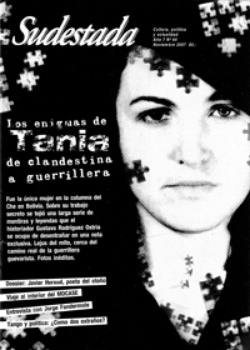

Buscar
Los enigmas de Tania: de clandestina a guerrillera
Durante décadas, el trabajo clandestino de la agente Tania permaneció oculto tras el secreto cubano. Se conocía de ella apenas retazos de una historia personal repleta de misterios y de preguntas sin respuestas. Por ese motivo, y por el interés que despertó la figura de la única mujer que integró las filas de la guerrilla liderada por el Che Guevara en Bolivia, y su muerte trágica durante la emboscada en el vado de Puerto Mauricio, el 31 de agosto de 1967; comenzaron a multiplicarse los mitos alrededor de su vida personal y política. Escritores con poco talento, historiadores sin fuentes confiables, oportunistas con hallazgos fabulados, generaron una telaraña de mentiras absurdas sobre Tania: su relación personal con el Che Guevara, su supuesto trabajo como "triple agente" de la Inteligencia cubana, la KGB soviética y la STASI alemana, una presunta enfermedad incurable y hasta batallas en las que jamás combatió, formaban parte de la farsa. Todo ayudaba a la sombría construcción de un mito, pero con más artificio que verdad. Con el tiempo, los cubanos fueron abriendo archivos y autorizando textos biográficos sobre la guerrillera nacida en Argentina. Y la verdad comenzó a desandar el camino, paso a paso, y a desnudar los inventos. Sin embargo, una etapa en la vida de Tania quedaba aún bajo el manto gris de la sombra: su estancia en Bolivia, y su trabajo como agente clandestina en ese país que, tiempo más tarde, elegiría Guevara para instalar su columna guerrillera. El artículo que sigue del historiador boliviano Gustavo Rodríguez Ostria (autor de Teoponte. Sin tiempo para las palabras), es apenas un fragmento de su investigación sobre ese período crucial en la vida de Tania, adelanto de su libro Tania. Una vida secreta en la guerrilla del Che, que se editará próximamente.
Edición N° 64
Noviembre 2007
Revista bimensual
Comprar edición impresaSumario
- Los enigmas de Tania: de clandestina a guerrillera
- Javier Heraud: "A la alegría vamos"
- Cuadernos de viaje
- La poética de Javier Heraud
- Jorge Fandermole: canciones para un río en disputa
- Ernesto Guevara por los caminos del Perú (segunda parte)
Compartir Articulo
En el panteón guerrillero, Haydée Tamara Bunke Bíder, más conocida como Tania es el contrapunto femenino del Che. Se la suele representar con un fusil al hombro, aunque murió el 31 de agosto de 1967 sin haber disparado un solo tiro ni participado en combate alguno. Tania fue un "topo" sorprendido fuera de su madriguera por las circunstancias; obligada a jugar un papel fuera de libreto.
Tania fue un componente, quizá el más escondido y secreto, del complejo entramado de la Operación Fantasma y los planes cubanos para instalar guerrillas en el Cono Sur. El 12 de mayo de 1961, arribó a La Habana, merced a una invitación del Ballet Nacional de Cuba. Hasta 1963, trabaja como traductora del Ministerio de Educación. Un anochecer de marzo de ese año, su vida dio un enorme giro. Manuel Piñeiro, jefe de la inteligencia isleña, la convocó a su casa. Le propuso que abandonara el trabajo público, y que se preparase para la vida clandestina: querían enviarla en secreto a un país desconocido. Aceptó el reto. No sabía que examinaron previamente sus antecedentes políticos y familiares. Rito de pasaje y de cambio de vida al mundo del clandestinaje, escogió el nombre de guerra de Tania. Rememoraba a Soja Anatoljewna Kosmodemjanskaja, joven soviética de 18 años, del mismo alias, ejecutada el 29 de octubre de 1941 por las fuerzas alemanas de ocupación.
Tania se desprendió de sus amigos y amigas. Inventó una excusa para explicar su desaparición y se sumergió en el mundo de lo misterioso. Desde principios de abril de 1963, y por casi todo un año, recibió un sofisticado y avanzado entrenamiento en inteligencia. Se usaron los métodos aprendidos de los soviéticos y los "expropiados" de la CIA. Inteligente y motivada, su aprendizaje dejó conformes a todos. Su examen final lo rindió en la ciudad de Cienfuegos. Con el nombre falso de Tamara Lorenzo, ciudadana cubana, llegó el 21 de febrero de 1964. Debía actuar como una supuesta saboteadora sin ser descubierta. Pasó la prueba[1].
A fines de marzo, se reunió con el Che. Recibió del comandante Guevara instrucciones para su misión en Bolivia: establecer nexos con los sectores dominantes y observar las condiciones socio-políticas del país, esperar pacientemente hasta ser (re)contactada por La Habana y nunca desesperarse ni solicitar ayuda alguna, ni siquiera a las organizaciones de izquierda.
El 9 de abril de 1964, inició su periplo rumbo a Bolivia. Viajó de La Habana a Praga bajo la identidad falsa de Haydée Bydel González, ciudadana cubana. La seguridad checa le proporcionó otro documento bajo el nombre de Mirta Iriarte, de origen argentino. Lo utilizó para recorrer Italia y Alemania Occidental. Parte el 13 de Abril. Viajó durante seis semanas por Holanda, Alemania Occidente y finalmente, Italia. Permaneció seis semanas. Durante la travesía, debía comprobar la validez de su manto y poner a prueba su capacidad de vivir en un país capitalista, bajo el constante peso de asumir una doble personalidad y el asedio de extraños.
El 24 de mayo, retornó a Praga. Estaba previsto que, una vez vencida la prueba, saliera para Bolivia. Usaría la falsa cobertura de Vitoria Pancini, italiana nacida en la empinada frontera entre aquel país y Austria, en el Tirol Meridional. Para dar los últimos toques, el 11 de Junio, José Pérez Abad, Diosdado, arribó a Praga. La evaluación del recorrido por Italia y Alemania demostró la habilidad e imaginación de Tania para enfrentar situaciones complicadas. Surgió, sin embargo, un obstáculo insalvable pues derrumbaba la cobertura. Tania no hablaba bien el italiano, al menos como para pasar por una ciudadana de ese país sin despertar sospechas. La constatación alteró todos los planes. Evaluaron que se requeriría al menos un año para subsanar la barrera lingüística; y aun así, la leyenda biográfica no sería completamente segura.
No quedó otro remedido que detener la salida de Tania. Con el consentimiento de La Habana, se empezó a elaborar su nueva identidad. Se la prefiguró por donde debió haber comenzado: su origen argentino. Se mantuvo el perfil de una etnóloga interesada en el rico folklore boliviano, pero se reforzó la parte germana de Tania; al fin y al cabo, aducía haber vivido en su parte occidental y que su madre ficticia tenía ese mismo origen.
A la par que se implantaba la nueva leyenda y memorizaba más cosas sobre la vida cotidiana, política y económica de Argentina, aprovechó para perfeccionar su entrenamiento físico, a fin de evitar que sus reflejos se adormecieran. El 5 de Agosto, con el pasaporte de Iriarte, partió para Alemania Occidental. Para dar verosimilitud a su nuevo ropaje, identificó casas y personas que memorizó para fortalecer su leyenda. Retornó a fines de mes. Vencida la prueba, el 1 de noviembre de 1964, dejó Praga definitivamente. Tras permanecer en Viena, se dirigió a París para abordar un avión rumbo a Sudamérica.
¿Por qué La Habana demoró casi seis meses y medio en autorizar su desplazamiento? Una justificación plausible es que fue necesario rearmar el nuevo manto de Tania y reciclarla en nuevas técnicas operativas. No hay evidencias, sin embargo, de que los servicios cubanos apuraran al dueto a terminar con el encargo. Quizá la respuesta esté en las características de la propia misión de Tania. En Abril de 1963, cuando la reclutaron, la Operación Fantasma estaba en pleno desarrollo. Las expectativas cubanas sobre su potencialidad eran crecientes. El ELN se aprestaba a ingresar al Perú mientras las pequeñas tropas del EGP de Jorge Masetti se entrenaban en Argelia. Un año más tarde, ambas fuerzas fracasaron estrepitosamente en instalar una guerrilla. Como si fuese poco, el 23 de agosto de 1964, Bolivia rompió relaciones con Cuba y expulsó a los integrantes de la embajada en La Paz. Tania quedó sin socorros y contactos, inducida a extremar esfuerzos y precauciones...
(La nota completa en la edición gráfica de Sudestada)
Comentarios
por Gustavo Rodríguez Ostria, desde Bolivia
Articulos más vistos


LIBRERÍA SUDESTADA

Colección infantil

Distribuidora de Libros

Suscripción

Sudestada en URUGUAY

Otros articulos de esta edición
La poética de Javier Heraud
Javier Heraud: "A la alegría vamos"
Eligió el cauce de la poesía, renacer en cada viaje y defender a su país y su revolución con las ...
 Entrevista
Entrevista
Jorge Fandermole: canciones para un río en disputa
El compositor y cantante santafesino dialoga en su obra con el universo que lo formó: el río, que acarrea bajo ...
 Nuestra América
Nuestra América
Ernesto Guevara por los caminos del Perú (segunda parte)
En los primeros días de 1952, dos jóvenes aventureros y soñadores partieron de Argentina, iniciando un recorrido que los llevaría ...
 Editorial
Editorial